Accueil / Produits
Tout est transformé sur place, en petites quantités : le lait de nos chèvres, le miel de nos ruches, et quelques recettes gourmandes ou pour la maison.
Une gamme de fromages fermiers, fabriqués avec le lait de nos chèvres poitevines, en agriculture biologique.

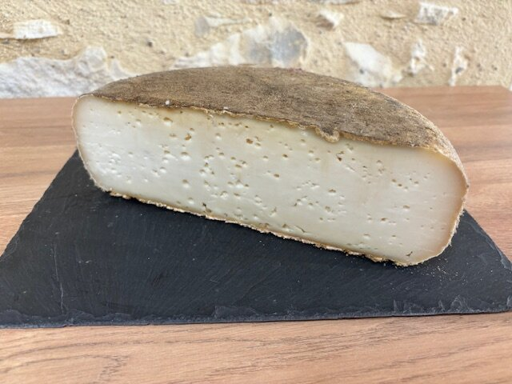
Fromage à pâte pressée, affiné plusieurs semaines.
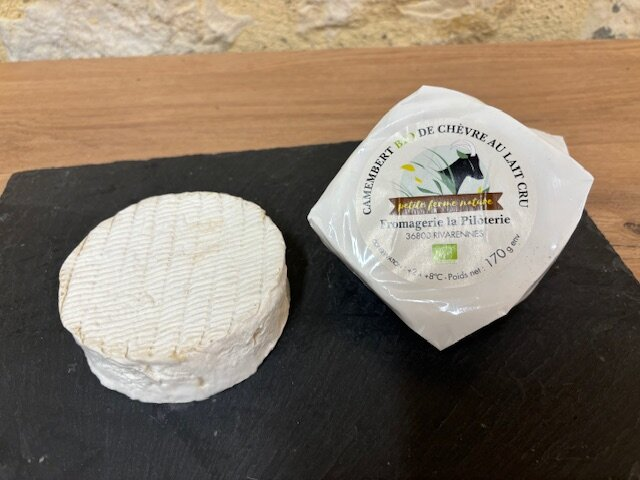
Pâte molle à croûte fleurie, tout en douceur.
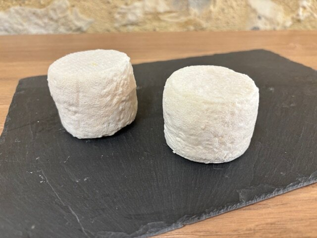
Le petit format traditionnel, du frais à l'affiné.
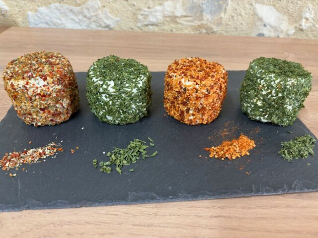
Fromage frais roulé dans piment, herbes ou ciboulette.
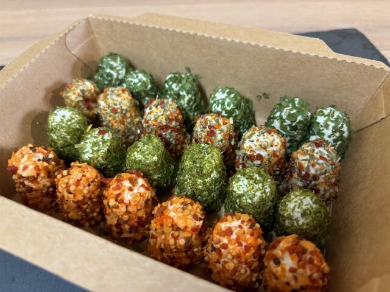
Format bouchée, parfaits pour l'apéritif.
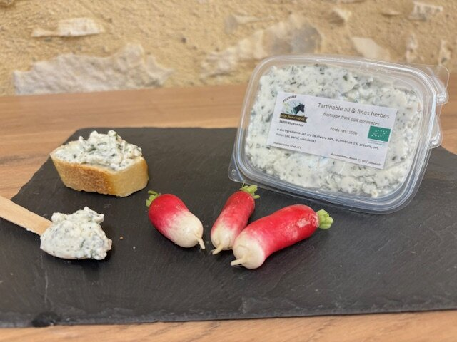
Fromage frais au lait cru, assaisonné ail et fines herbes.
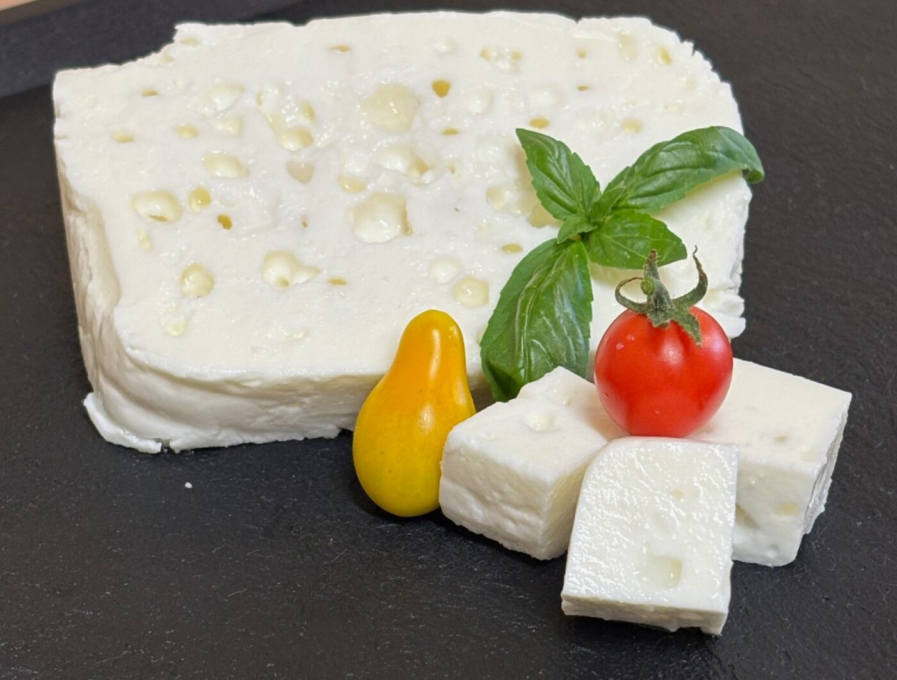
Notre fromage type féta, 100% lait de chèvre.
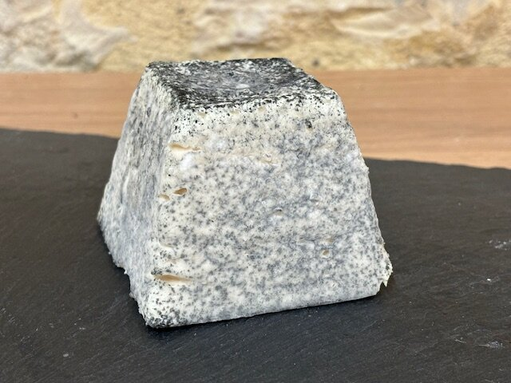
Pâte lactique cendrée, fine et affinée.
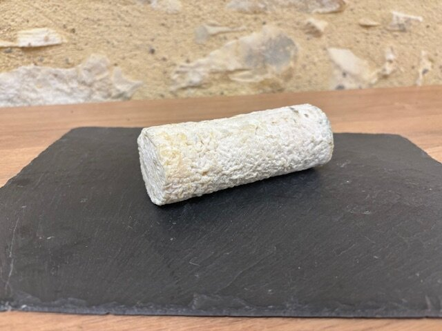
Fromage lactique en bûche, nature ou affinée.
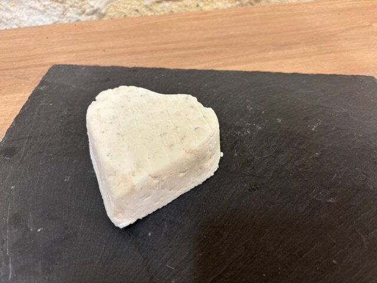
Un format tout en tendresse, nature ou affiné.
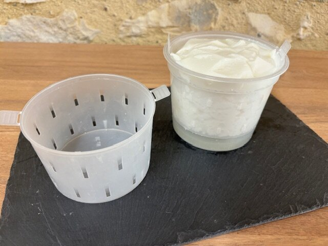
Fromage frais égoutté, nature et onctueux.
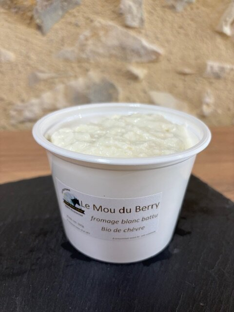
Fromage blanc battu, bio, tout en douceur.
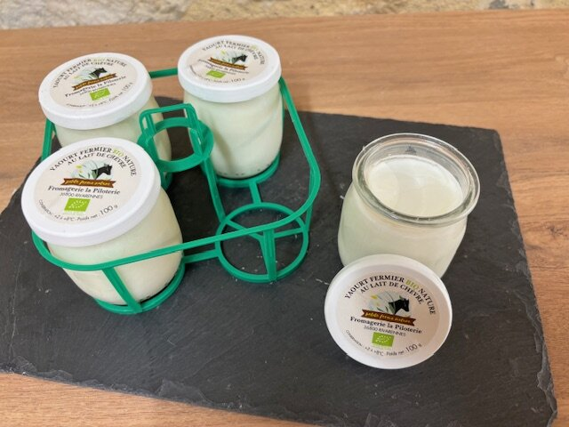
Yaourts fermiers nature, au lait de chèvre.
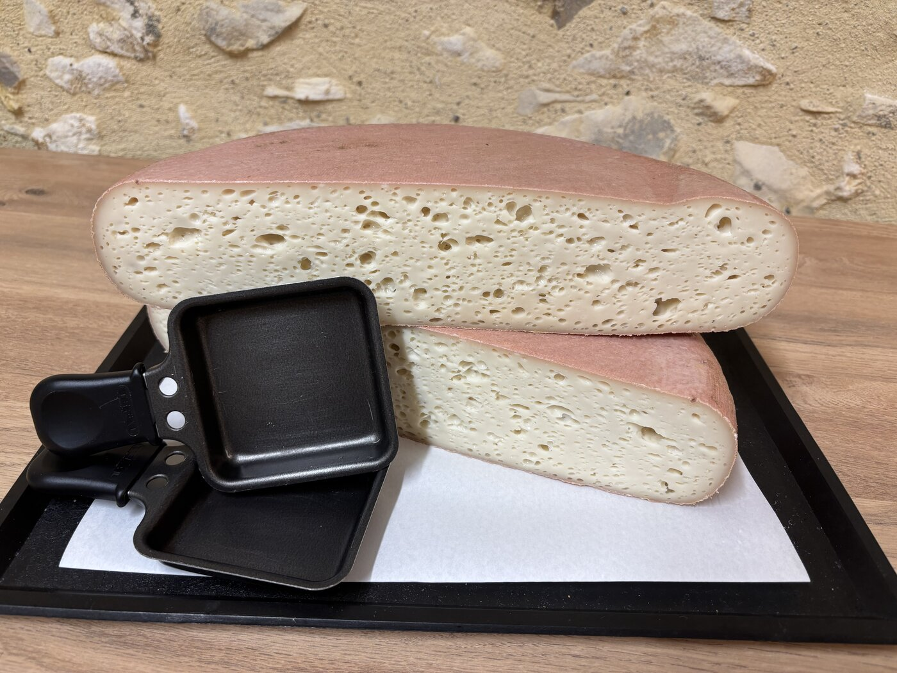
Une raclette bio au lait cru, pour changer de la vache !
Récolté directement sur les ruches installées dans les prairies de la ferme, notre miel est conditionné sur place : miel de printemps ou miel d'été, selon la récolte.
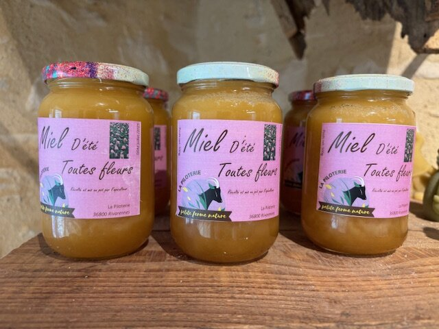
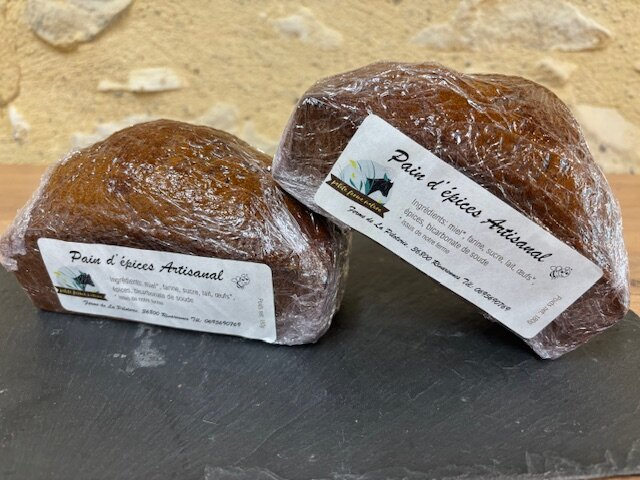
Fabriqué avec notre miel et les œufs de nos poules. Disponible au format 180 g, ainsi qu'en format toast, idéal pour les fêtes.

Fabriquées à partir des excédents de cire de nos ruches. Sans parfum ajouté : seule la senteur naturelle de la cire d'abeille s'en dégage.
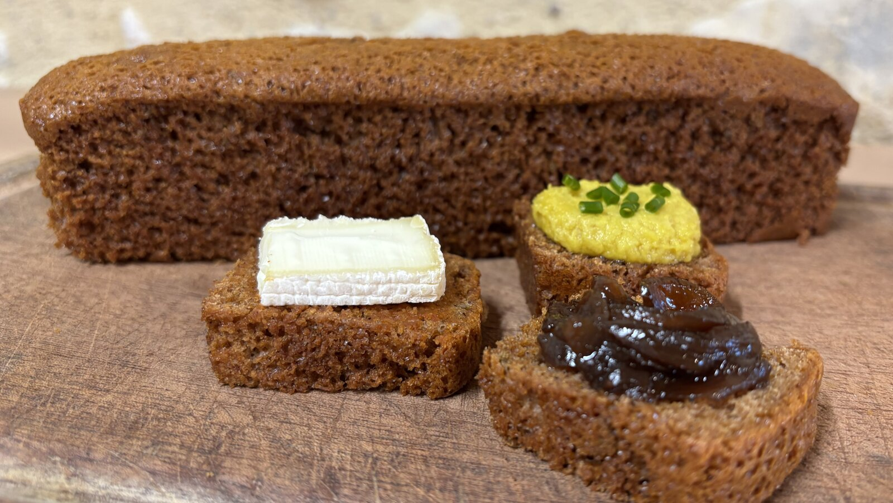
Idéal pour les fêtes : tranché et garni à l'apéritif, avec un peu de camembert, de tapenade ou de moutarde.
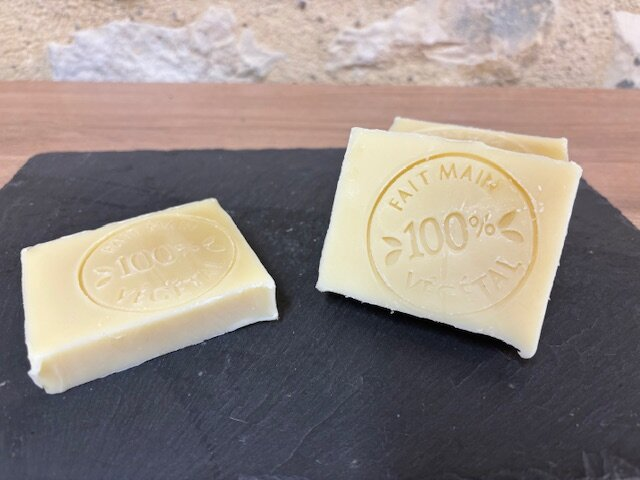
Fabriqués à la ferme à partir du lait de nos chèvres, nos savons artisanaux 100% végétaux prennent soin de la peau tout en douceur.
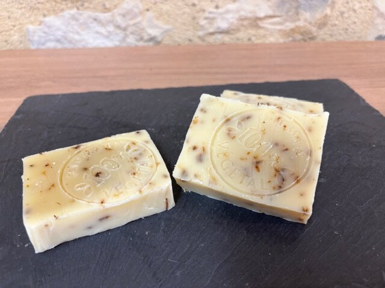
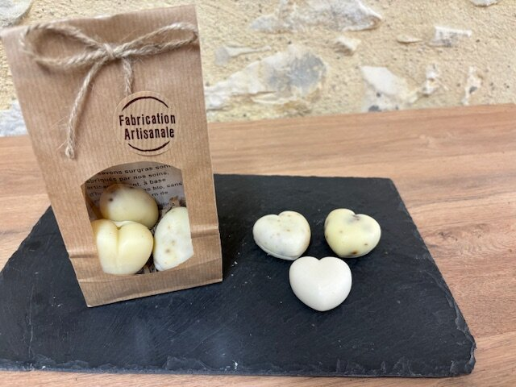
À la ferme, sur les marchés de Saint-Gaultier (vendredi matin) et Saint-Benoît-du-Sault (samedi matin), via le réseau Cagette & Fourchette, ou en ligne pour certains points de livraison.